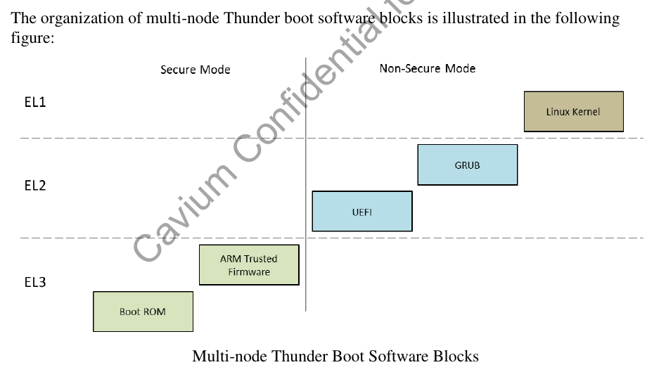
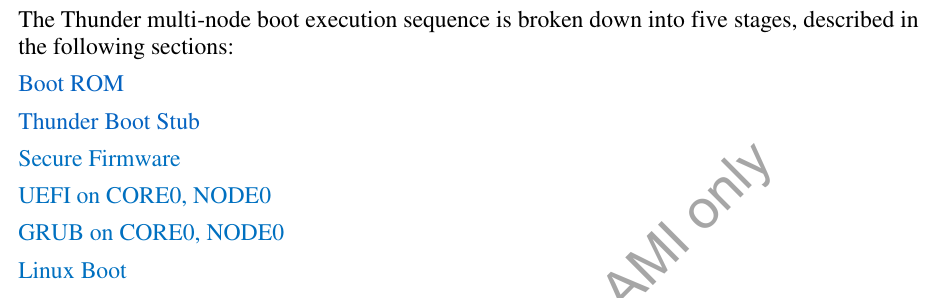
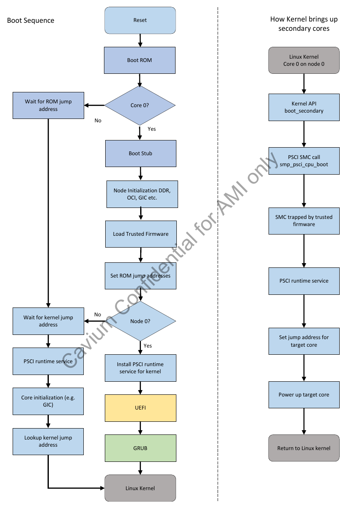

1. 默认的grub
menuentry 'Thunder Boot' {
linux /boot/Image root=/dev/sda2 console=ttyAMA0,115200n8 earlycon=pl011,0x87e024000000 debug coherent_pool=16M rootwait rw uefi_debug
boot
}
2. 关于MAC地址
setvar N1ETH0 -guid A70B59ED-6228-4883-BBF0-5FD91C14EFF6 -bs -rt -nv =0x123456789abc01
这里的guid是
./ArmPlatformPkg/ThunderPkg/Thunder_cn88xx.dec:34: gThunderPlatformTokenSpaceGuid = { 0xa70b59ed, 0x6228, 0x4883, { 0xbb, 0xf0, 0x5f, 0xd9, 0x1c, 0x14, 0xef, 0xf6 } }
3. 内核里面的UEFI
在内核里面打开了EFI=y
内核支持UEFI的runtime service, 并且打开了uefi_stub, 使内核能够作为一个UEFI app来启动.
这里还打开了一个EFI_VARS的功能, 好像是能够通过/sys文件系统修改UEFI的变量
4. 启动顺序



5. makefile目标
DEBUG ?= 0
PLATFORM=cn88xx
目标
build -a AARCH64 -t ARMGCC -p ArmPlatformPkg/ThunderPkg/Thunder_${PLATFORM}.dsc -b ${TARGET}
cp ./Build/Thunder_${PLATFORM}/${TARGET}_ARMGCC/FV/THUNDER_EFI.fd ${WORKSPACE}/THUNDER_EFI.fd
shell目标
build -a AARCH64 -t ARMGCC -p ShellPkg/ShellPkg.dsc -b ${TARGET}
6. acpi table
每个板子都有
ArmPlatformPkg/ThunderPkg/AcpiTables/Crb1s.asl
ArmPlatformPkg/ThunderPkg/AcpiTables/Crb2s.asl
7. Thunder_${PLATFORM}.dsc
- platform也有GUID
- common的模块
[LibraryClasses.common]
ArmLib|ArmPkg/Library/ArmLib/AArch64/AArch64Lib.inf
ArmCpuLib|ArmPkg/Drivers/ArmCpuLib/ArmCortexAEMv8Lib/ArmCortexAEMv8Lib.inf
ArmPlatformLib|ArmPlatformPkg/ThunderPkg/Library/ThunderLib/ThunderLib.inf
ThunderxConfigLib|ArmPlatformPkg/ThunderPkg/Library/ThunderxConfigLib/ThunderxConfigLib.inf
ThunderxFdtLib|ArmPlatformPkg/ThunderPkg/Library/ThunderxFdtLib/ThunderxFdtLib.inf
EfiResetSystemLib|ArmPkg/Library/ArmPsciResetSystemLib/ArmPsciResetSystemLib.inf
ThunderxSmcLib|ArmPlatformPkg/ThunderPkg/Library/ThunderxSmcLib/ThunderxSmcLib.inf
ThunderxTwsiLib|ArmPlatformPkg/ThunderPkg/Library/ThunderxTwsiLib/ThunderxTwsiLib.inf
ThunderxWdogLib|ArmPlatformPkg/ThunderPkg/Library/ThunderxWdogLib/ThunderxWdogLib.inf
ArmPlatformSysConfigLib|ArmPlatformPkg/ThunderPkg/Library/ThunderSysConfigLib/ThunderSysConfigLib.inf
TimerLib|ArmPkg/Library/ArmArchTimerLib/ArmArchTimerLib.inf
PciExpressLib|ArmPlatformPkg/ThunderPkg/Library/BasePciExpressLib/BasePciExpressLib.inf
PciLib|MdePkg/Library/BasePciLibPciExpress/BasePciLibPciExpress.inf
- GIC
gArmTokenSpaceGuid.PcdSystemMemoryBase|0x01400000
gArmTokenSpaceGuid.PcdSystemMemoryBase_Node2|0x10000400000
#
# ARM General Interrupt Controller
#
gArmTokenSpaceGuid.PcdGicDistributorBase|0x801000000000
gArmTokenSpaceGuid.PcdGicInterruptInterfaceBase|0x801000002000
- PL011就是arm体系下的串口
serial@101f0000 {
compatible = "arm,pl011";
reg = <0x101f0000 0x1000 >;
interrupts = < 1 0 >;
};
gEfiMdeModulePkgTokenSpaceGuid.PcdSerialRegisterBase|0x87e024000000 --从手册可以查到, 这个地址就是串口寄存器的地址, 看起来, thunder的串口是按照arm标准设计的.
- 为什么有的寄存器的地址非常小????
## PL180 MMC/SD card controller
gArmPlatformTokenSpaceGuid.PcdPL180SysMciRegAddress|0x1C010048
gArmPlatformTokenSpaceGuid.PcdPL180MciBaseAddress|0x1C050000
- 默认的grub启动路径, 固定的pci, 固定的uuid分区
#
# GRUB Loader from SATA DISK from EFI partition.
#
gArmPlatformTokenSpaceGuid.PcdDefaultBootDescription|L"GRUB"
gArmPlatformTokenSpaceGuid.PcdDefaultBootDevicePath|L"PciRoot(0x1)/Pci(0x8,0x0)/Sata(0x0,0x0,0x0)/HD(1,GPT,E3AE6975-BACE-464E-91E1-BB4FE9954047,0x800,0x31801)/\EFI\BOOT\BOOTAA64.EFI"
gArmPlatformTokenSpaceGuid.PcdDefaultBootType|0
- 看起来变量是保存在flash上的
#FTW Non-volatile flash storage
gEfiMdeModulePkgTokenSpaceGuid.PcdFlashNvStorageVariableBase|0xF00000
gEfiMdeModulePkgTokenSpaceGuid.PcdFlashNvStorageVariableBase64|0xF00000
gEfiMdeModulePkgTokenSpaceGuid.PcdFlashNvStorageVariableSize|0x9000
gEfiMdeModulePkgTokenSpaceGuid.PcdFlashNvStorageFtwWorkingBase|0xF09000
gEfiMdeModulePkgTokenSpaceGuid.PcdFlashNvStorageFtwWorkingBase64|0xF09000
gEfiMdeModulePkgTokenSpaceGuid.PcdFlashNvStorageFtwWorkingSize|0x1000
gEfiMdeModulePkgTokenSpaceGuid.PcdFlashNvStorageFtwSpareBase|0xF0A000
gEfiMdeModulePkgTokenSpaceGuid.PcdFlashNvStorageFtwSpareBase64|0xF0A000
gEfiMdeModulePkgTokenSpaceGuid.PcdFlashNvStorageFtwSpareSize|0x0000A000
- 每个inf描述被包含的一个模块???
#
# ACPI Support
#
MdeModulePkg/Universal/Acpi/AcpiTableDxe/AcpiTableDxe.inf
ArmPlatformPkg/ThunderPkg/AcpiPlatformDxe/AcpiPlatformDxe.inf
ArmPlatformPkg/ThunderPkg/AcpiTables/AcpiTables.inf
#
# FDT support
#
ArmPlatformPkg/ThunderPkg/FdtPlatformDxe/FdtPlatformDxe.inf
ArmPlatformPkg/ThunderPkg/MdeModulePkg/Universal/Variable/RuntimeDxe/VariableRuntimeDxe.inf
ArmPlatformPkg/ThunderPkg/MdeModulePkg/Universal/FaultTolerantWriteDxe/FaultTolerantWriteDxe.inf
#
# FAT filesystem + GPT/MBR partitioning
#
MdeModulePkg/Universal/Disk/DiskIoDxe/DiskIoDxe.inf
MdeModulePkg/Universal/Disk/PartitionDxe/PartitionDxe.inf
MdeModulePkg/Universal/Disk/UnicodeCollation/EnglishDxe/EnglishDxe.inf
最后这三个有意思
#ASIX Electronics Corp. AX88772B ETH to USB doungle supprt
OptionRomPkg/Bus/Usb/UsbNetworking/Ax88772b/Ax88772b.inf
#SMBIOS
MdeModulePkg/Universal/SmbiosDxe/SmbiosDxe.inf
ArmPlatformPkg/ThunderPkg/Drivers/PlatformSmbiosDxe/PlatformSmbiosDxe.inf {
<LibraryClasses>
SmbiosLib|ArmPlatformPkg/ThunderPkg/Library/SmbiosLib/SmbiosLib.inf
}
#RTC
ArmPlatformPkg/ThunderPkg/Drivers/Ds1337RtcDxe/Ds1337RtcDxe.inf
还包含了FDT的blob, 里面貌似也没什么特别的, 似乎是个common的
#To include FDT blob in UEFI image
MdeModulePkg/Universal/Fdt/FdtTableDxe/FdtTableDxe.inf
8. ACPI
看了半天FDT, 这个ACPI到底是搞什么飞机??????
PopulateMacAddressCrb2S()
似乎内核配置里面所有的ACPI都是n
注: 因为关闭了CONFIG_EXPERT
9. 关于FDT
前面说了, ArmPlatformPkg/ThunderPkg/FdtPlatformDxe/FdtPlatformDxe.inf是FDT的入口
这是一个DXE_DRIVER, 入口是FdtPlatformEntryPoint
在FdtPlatform.c中
/**
Entrypoint of Fdt Platform driver.
**/
EFI_STATUS
EFIAPI
FdtPlatformEntryPoint (
IN EFI_HANDLE ImageHandle,
IN EFI_SYSTEM_TABLE *SystemTable
)
{
BOARD_CFG* HwConfig;
HwConfig = ThunderXGetBoardConfig(); //这里貌似主要是搞BGX
ThunderxPatchFdt(HwConfig); //这里需要重点关注
主要是搞bgx
mac地址是从一个变量读出来的
UnicodeSPrint(mac_variable_name, 9 * sizeof(CHAR16), L"N%dETH%d", it->node, it->id) //N0ETH0
err = gRT->GetVariable(mac_variable_name, &gThunderPlatformTokenSpaceGuid, NULL, &mac_size, mac_address);
然后写到FDT里面
err = fdt_appendprop(device_tree_base, fdt_node, "local-mac-address", mac_address_char, 6)
return EFI_SUCCESS;
}
这里的ThunderxBoardType需要适配
9.1. ArmPlatformPkg/ThunderPkg/Dts/thunder-88xx.dts
/dts-v1/;
/include/ "thunder-88xx.dtsi"
/ {
model = "Cavium ThunderX CN88XX board";
compatible = "cavium,thunder-88xx";
aliases {
serial0 = &uaa0;
serial1 = &uaa1;
};
memory@00000000 {
device_type = "memory";
reg = <0x0 0x00000000 0x3 0xc0000000>;
};
memory@10000000000 {
device_type = "memory";
reg = <0x100 0x00400000 0x3 0xc0000000>;
};
};
9.1.1. ArmPlatformPkg/ThunderPkg/Dts/thunder-88xx.dtsi
compatible = "cavium,thunder-88xx";
interrupt-parent = <&gic0>;
psci {
compatible = "arm,psci-0.2";
method = "smc";
};
CPU0: cpu@000 {
device_type = "cpu";
compatible = "cavium,thunder", "arm,armv8";
reg = <0x0 0x000>;
enable-method = "psci";
};
timer {
compatible = "arm,armv8-timer";
interrupts = <1 13 0xff01>,
<1 14 0xff01>,
<1 11 0xff01>,
<1 10 0xff01>;
};
pmu {
compatible = "arm,armv8-pmuv3";
interrupts = <1 7 4>;
};
soc 中断
gic0: interrupt-controller@8010,00000000 {
compatible = "arm,gic-v3";
#interrupt-cells = <3>;
#address-cells = <2>;
#size-cells = <2>;
#redistributor-regions = <2>;
ranges;
interrupt-controller;
reg = <0x8010 0x00000000 0x0 0x010000>, /* GICD */
<0x8010 0x80000000 0x0 0x600000>, /* GICR Node 0 */
<0x9010 0x80000000 0x0 0x600000>; /* GICR Node 1 */
interrupts = <1 9 0xf04>;
its: gic-its@8010,00020000 {
compatible = "arm,gic-v3-its";
msi-controller;
reg = <0x8010 0x20000 0x0 0x200000>;
};
its1: gic-its@9010,00020000 {
compatible = "arm,gic-v3-its";
msi-controller;
reg = <0x9010 0x20000 0x0 0x200000>;
};
};
soc 两个串口
uaa0: serial@87e0,24000000 {
compatible = "arm,pl011", "arm,primecell";
reg = <0x87e0 0x24000000 0x0 0x1000>;
interrupts = <0 5 4>;
clocks = <&refclkuaa>;
clock-names = "apb_pclk";
};
uaa1: serial@87e0,25000000 {
compatible = "arm,pl011", "arm,primecell";
reg = <0x87e0 0x25000000 0x0 0x1000>;
interrupts = <0 6 4>;
clocks = <&refclkuaa>;
clock-names = "apb_pclk";
pcie
下面的不属于soc, 是独立的
一个node有4个pcie(ECAM), 对应的有4个SMMU
pcie0: pcie0@0x8480,00000000 {
compatible = "cavium,thunder-pcie";
device_type = "pci";
msi-parent = <&its>;
bus-range = <0 255>;
#size-cells = <2>;
#address-cells = <3>;
#stream-id-cells = <1>;
reg = <0x8480 0x00000000 0 0x10000000>; /* Configuration space */
ranges = <0x03000000 0x8010 0x00000000 0x8010 0x00000000 0x70 0x00000000>, /* mem ranges */
<0x03000000 0x8300 0x00000000 0x8300 0x00000000 0x500 0x00000000>;
};
pcie7: pcie7@0x94b0,00000000 {
compatible = "cavium,thunder-pcie";
device_type = "pci";
msi-parent = <&its1>;
bus-range = <0 255>;
#size-cells = <2>;
#address-cells = <3>;
#stream-id-cells = <1>;
reg = <0x94b0 0x00000000 0 0x10000000>; /* Configuration space */
ranges = <0x03000000 0x9330 0x00000000 0x9330 0x00000000 0x00 0x10000000>, /* mem ranges */
<0x03000000 0x9180 0x00000000 0x9180 0x00000000 0x80 0x00000000>;
};
smmu0@0x8300,00000000 {
compatible = "arm,smmu-v2";
reg = <0x8300 0x0 0x0 0x2000000>;
#global-interrupts = <1>;
interrupts = <0 68 4>, <0 69 4>, <0 69 4>, <0 69 4>, <0 69 4>, <0 69 4>,
<0 69 4>, <0 69 4>, <0 69 4>, <0 69 4>, <0 69 4>, <0 69 4>,
<0 69 4>, <0 69 4>, <0 69 4>, <0 69 4>, <0 69 4>, <0 69 4>,
<0 69 4>, <0 69 4>, <0 69 4>, <0 69 4>, <0 69 4>, <0 69 4>,
<0 69 4>, <0 69 4>, <0 69 4>, <0 69 4>, <0 69 4>, <0 69 4>,
<0 69 4>, <0 69 4>, <0 69 4>, <0 69 4>, <0 69 4>, <0 69 4>,
<0 69 4>, <0 69 4>, <0 69 4>, <0 69 4>, <0 69 4>, <0 69 4>,
<0 69 4>, <0 69 4>, <0 69 4>, <0 69 4>, <0 69 4>, <0 69 4>,
<0 69 4>, <0 69 4>, <0 69 4>, <0 69 4>, <0 69 4>, <0 69 4>,
<0 69 4>, <0 69 4>, <0 69 4>, <0 69 4>, <0 69 4>, <0 69 4>,
<0 69 4>, <0 69 4>, <0 69 4>, <0 69 4>, <0 69 4>, <0 69 4>,
<0 69 4>, <0 69 4>, <0 69 4>, <0 69 4>, <0 69 4>, <0 69 4>,
<0 69 4>, <0 69 4>, <0 69 4>, <0 69 4>, <0 69 4>, <0 69 4>,
<0 69 4>, <0 69 4>, <0 69 4>, <0 69 4>, <0 69 4>, <0 69 4>,
<0 69 4>, <0 69 4>, <0 69 4>, <0 69 4>, <0 69 4>, <0 69 4>,
<0 69 4>, <0 69 4>, <0 69 4>, <0 69 4>, <0 69 4>, <0 69 4>,
<0 69 4>, <0 69 4>, <0 69 4>, <0 69 4>, <0 69 4>, <0 69 4>,
<0 69 4>, <0 69 4>, <0 69 4>, <0 69 4>, <0 69 4>, <0 69 4>,
<0 69 4>, <0 69 4>, <0 69 4>, <0 69 4>, <0 69 4>, <0 69 4>,
<0 69 4>, <0 69 4>, <0 69 4>, <0 69 4>, <0 69 4>, <0 69 4>,
<0 69 4>, <0 69 4>, <0 69 4>, <0 69 4>, <0 69 4>, <0 69 4>,
<0 69 4>, <0 69 4>, <0 69 4>;
mmu-masters = <&pcie0 0x100>;
thunderx,smmu-64-bit-writes-only;
};
smmu7@0x9330,00000000 {
compatible = "arm,smmu-v2";
reg = <0x9330 0x0 0x0 0x2000000>;
#global-interrupts = <1>;
interrupts = <0 82 4>, <0 83 4>, <0 83 4>, <0 83 4>, <0 83 4>, <0 83 4>,
<0 83 4>, <0 83 4>, <0 83 4>, <0 83 4>, <0 83 4>, <0 83 4>,
<0 83 4>, <0 83 4>, <0 83 4>, <0 83 4>, <0 83 4>, <0 83 4>,
<0 83 4>, <0 83 4>, <0 83 4>, <0 83 4>, <0 83 4>, <0 83 4>,
<0 83 4>, <0 83 4>, <0 83 4>, <0 83 4>, <0 83 4>, <0 83 4>,
<0 83 4>, <0 83 4>, <0 83 4>, <0 83 4>, <0 83 4>, <0 83 4>,
<0 83 4>, <0 83 4>, <0 83 4>, <0 83 4>, <0 83 4>, <0 83 4>,
<0 83 4>, <0 83 4>, <0 83 4>, <0 83 4>, <0 83 4>, <0 83 4>,
<0 83 4>, <0 83 4>, <0 83 4>, <0 83 4>, <0 83 4>, <0 83 4>,
<0 83 4>, <0 83 4>, <0 83 4>, <0 83 4>, <0 83 4>, <0 83 4>,
<0 83 4>, <0 83 4>, <0 83 4>, <0 83 4>, <0 83 4>, <0 83 4>,
<0 83 4>, <0 83 4>, <0 83 4>, <0 83 4>, <0 83 4>, <0 83 4>,
<0 83 4>, <0 83 4>, <0 83 4>, <0 83 4>, <0 83 4>, <0 83 4>,
<0 83 4>, <0 83 4>, <0 83 4>, <0 83 4>, <0 83 4>, <0 83 4>,
<0 83 4>, <0 83 4>, <0 83 4>, <0 83 4>, <0 83 4>, <0 83 4>,
<0 83 4>, <0 83 4>, <0 83 4>, <0 83 4>, <0 83 4>, <0 83 4>,
<0 83 4>, <0 83 4>, <0 83 4>, <0 83 4>, <0 83 4>, <0 83 4>,
<0 83 4>, <0 83 4>, <0 83 4>, <0 83 4>, <0 83 4>, <0 83 4>,
<0 83 4>, <0 83 4>, <0 83 4>, <0 83 4>, <0 83 4>, <0 83 4>,
<0 83 4>, <0 83 4>, <0 83 4>, <0 83 4>, <0 83 4>, <0 83 4>,
<0 83 4>, <0 83 4>, <0 83 4>, <0 83 4>, <0 83 4>, <0 83 4>,
<0 83 4>, <0 83 4>, <0 83 4>;
mmu-masters = <&pcie7 0x100>;
thunderx,smmu-64-bit-writes-only;
};
MDIO
首先列出所有支持的qlm模式下的phy, 同样是2个node, 每个node有两个bgx
那么就有00 10 20 30表示4个bgx
sgmii00 sgmii01 sgmii02 sgmii03: marvell,88e1240
xfi00 xfi01 xfi02 xfi03:
xfi00: xfi00 {
qlm-mode = "0,xfi","0,xfi-10g-kr";
reg = <0> ; --这里的reg要不要改???? 这个应该就是mdio的地址
compatible = "cortina,cs4223-slice";
};
xlaui00: cortina,cs4223-slice
xaui00: broadcom,bcm8706
rxaui00 rxaui01: marvell,88x3120
下面就是bgx, 一共4个, 指定phy-handle, 很全, 没什么好改的.
FDT就这么多了.